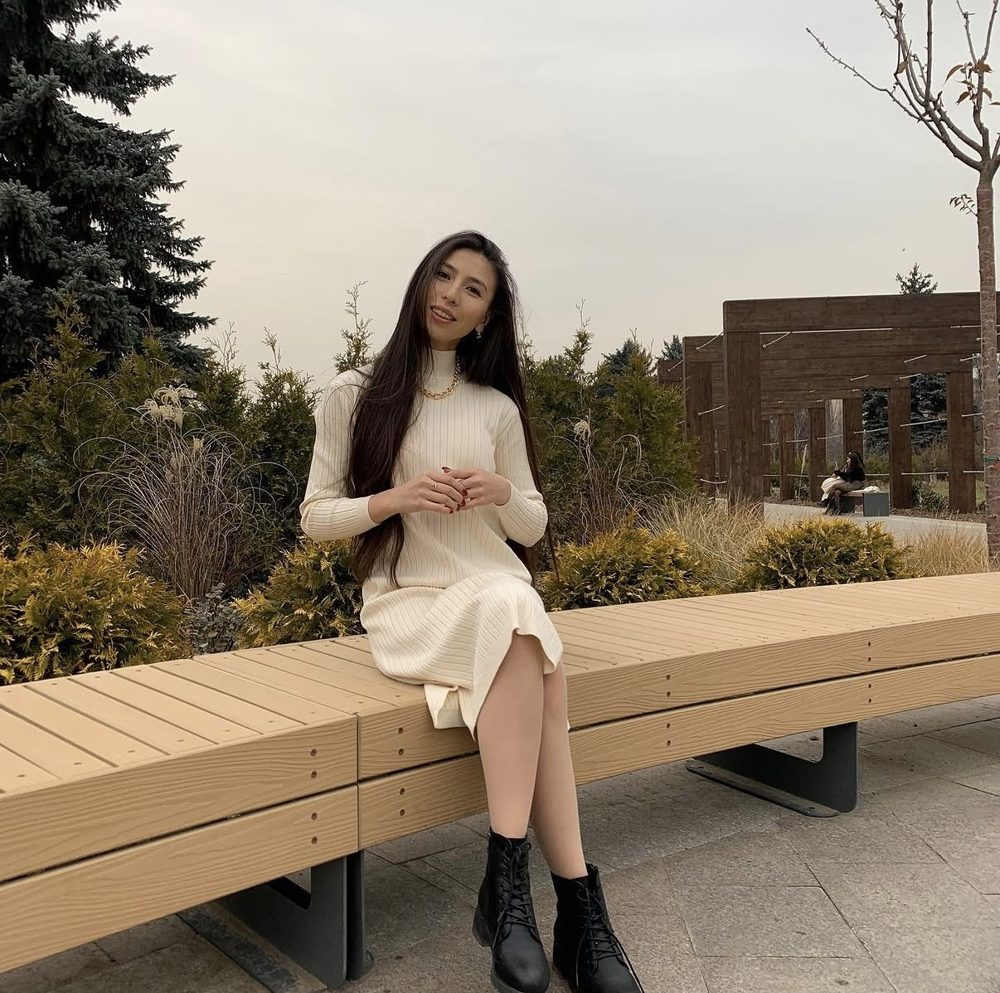
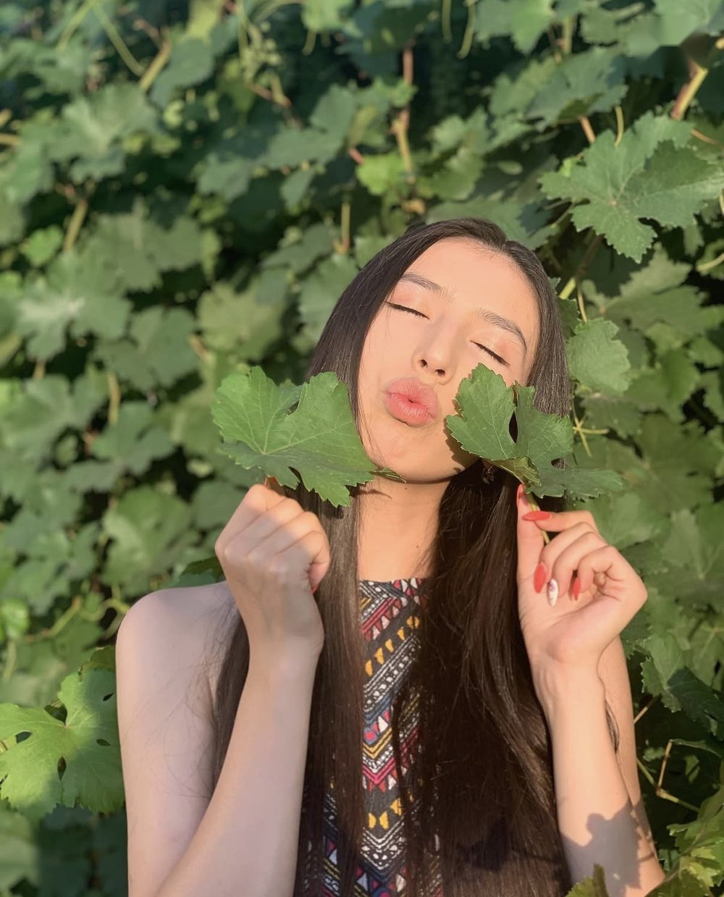
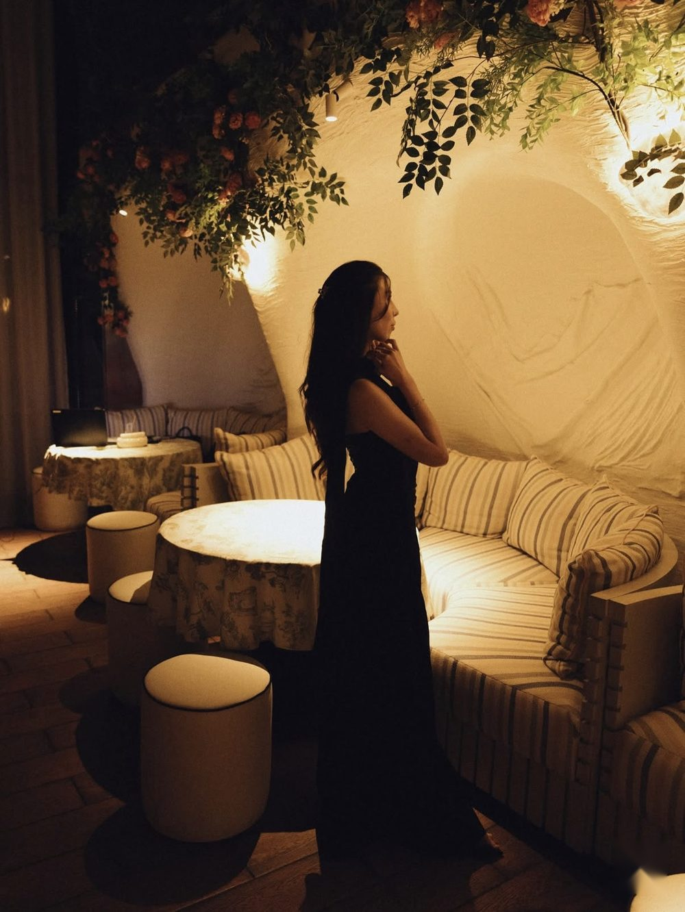
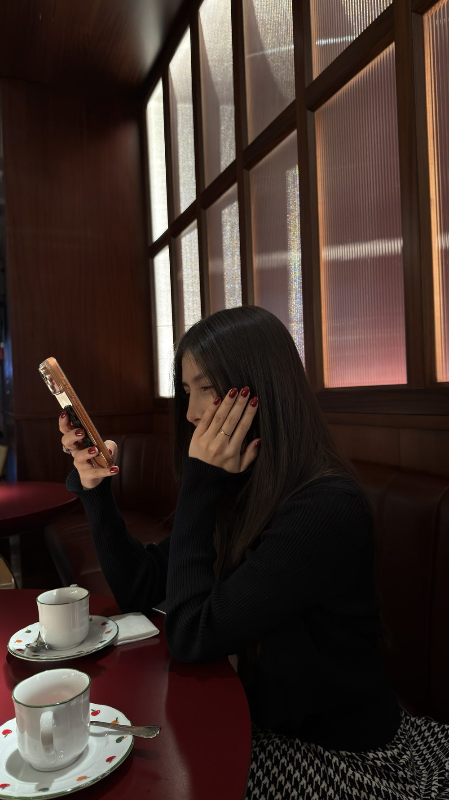
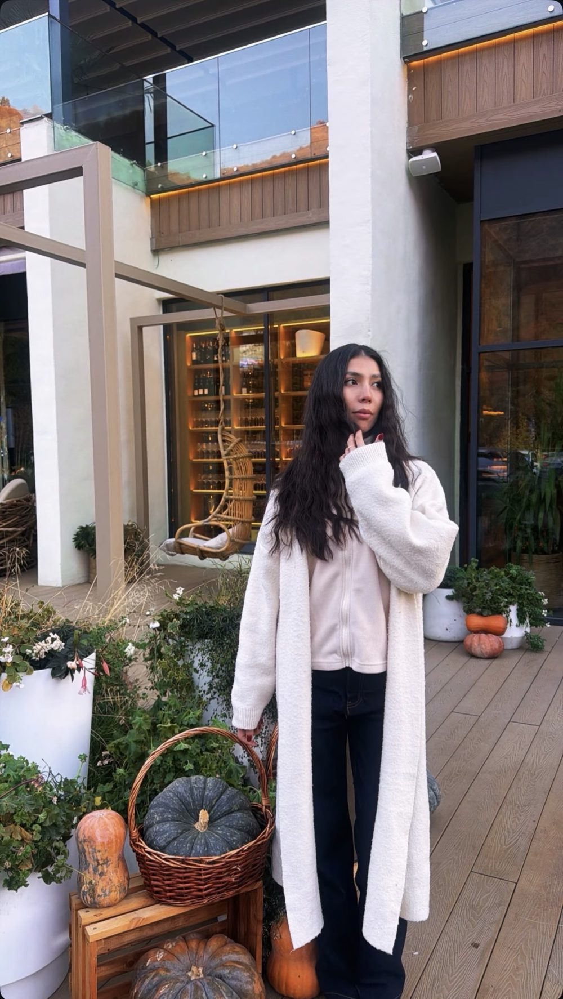
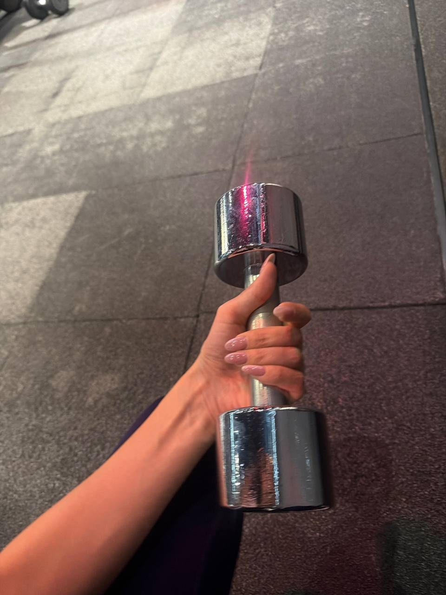

Кадр, как из кино.
Глубокий красный, чёрное платье и взгляд через плечо. Ты умеешь одним поворотом головы сделать всё вокруг тише.
Айганым,
Для тебя есть письмо и песня.
Сделай погромче, убери беззвучный режим
и, когда будешь готова, нажми кнопку.
Письмо
7 октября я впервые увидел тебя вживую и растерялся, как мальчишка: не нашёл ни одного слова, потому что такой красоты не ожидал. Это письмо — моя попытка сказать всё то, что тогда не получилось.
Ниже несколько кадров и то, что я в них вижу.
❦Кадр, как из кино.
Глубокий красный, чёрное платье и взгляд через плечо. Ты умеешь одним поворотом головы сделать всё вокруг тише.

Тёплая осень и спокойная улыбка.
Светлое платье, длинные волосы, скамейка в парке. В тебе есть уют, рядом с которым хочется никуда не спешить.

Даже осень рядом с тобой старается.
Золотой свет, пыльно-розовые цветы и лёгкая улыбка. Такой кадр хочется оставить себе.
В тебе есть азарт.
Ракетка у лица, шаг в сторону, взгляд «сейчас обыграю». Я готов проиграть, лишь бы услышать, как ты смеёшься.

Ты умеешь быть лёгкой.
Живой, настоящей, с зелёным листом у щеки. С тобой, кажется, не бывает скучно.

В тебе есть нежность.
Та самая, которую не нужно доказывать. Тихий взгляд, спокойное «я рядом». Рядом с этим хочется замедлиться.

Свет, цветы и твой силуэт.
Тёплый вечер, цветы над головой и ты в профиль. Хочется смотреть и не нарушать тишину.

Красота в обычных мелочах.
Чашка кофе, телефон в руке, мягкий свет в окнах. Даже в такой тихий момент ты выглядишь как кадр из фильма.

Тёплая осень в белом.
Вечерние огни, тыквы и твой задумчивый взгляд в сторону. Я бы многое отдал, чтобы узнать, о чём ты думала.
И в тебе есть собранность.
Спокойный взгляд и ровная осанка, будто всё под контролем. Рядом с такой хочется становиться лучше.

Это первая фотография, которую ты мне прислала.
Совсем простая: гантеля и твоя рука. Но именно с неё для меня всё началось.
Тогда я потерял дар речи. Хочу, чтобы следующий вечер был таким, где я наконец смогу сказать всё вслух.
И в конце
Буду ждать.
Твой Ерназ